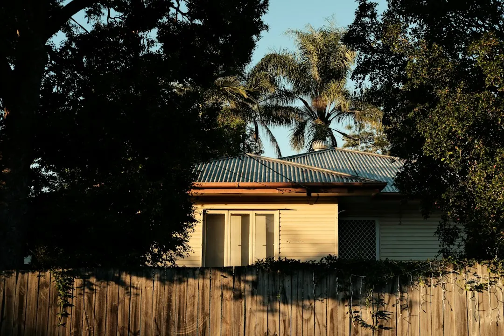

Common residential repairs range from $120-$200 for a service call-out, $220-$450 for torsion spring replacement, $180-$320 for lifting cables and $600-$1,100 for an opener or motor replacement. A new single sectional door is typically $2,500-$5,000 supplied and installed. The final amount depends on the door, hardware, access and timing, so request a written fixed-price quote before approving work.
For homeowners comparing garage door repairs brisbane options, the practical decision is whether the fault points to a spring, opener, track, cable or door section, and what information will produce a useful fixed-price quote.
Garage Door Repairs Brisbane Explained
For homeowners comparing local repair options, Southside Garage Doors describes common residential faults across sectional, roller and tilt doors. The useful first step is to record what the door does, rather than guessing which component has failed.
Note whether the door is jammed, off-track, slow, noisy, unresponsive to a remote or keypad, or unable to secure. If it moves unevenly, mention whether one side lifts differently from the other. A short description, the door type, your suburb and a preferred callback time give the attending technician better starting information.
- Spring or cable symptoms may involve a door that will not lift normally.
- Opener faults may involve a motor or powered control that has stopped responding.
- Track, roller or panel issues may leave the door off-track, derailed or visibly damaged.
These descriptions do not replace an inspection. They help establish whether the visit is likely to concern a spring, lifting cable, roller, opener, panel or section.
What the repair menu tells you
The service list covers more than one type of adjustment. Spring and cable work addresses lifting components, while roller and off-track repairs concern the door's movement along its track. Panel and section replacement is a different decision again, particularly where the door can no longer operate as intended.
Powered openers add a separate electrical question. The published service information states that mains electrical work on a powered opener is carried out by a licensed electrician under the Queensland Electrical Safety Act 2002. Ask which part of the job involves mechanical repair, programming or electrical work, and who is responsible for each part.
Remote and keypad programming may be appropriate when the door hardware works but access controls do not respond. New installation becomes relevant when repair is not the preferred outcome, or when a replacement door is being considered alongside the cost of repairing an existing one.
For a narrower look at spring-related faults, see the Brisbane spring repair guide.
Costs, quotes and repair versus replacement
The published Brisbane guide gives planning ranges, not binding offers. A standard service call-out is listed at $120-$200, torsion spring replacement at $220-$450, lifting cable replacement at $180-$320, track roller replacement at $160-$300 and opener or motor replacement at $600-$1,100.
A new single sectional door, supplied and installed, is listed at $2,500-$5,000. The comparison is not simply repair cost against a new-door price. Door type and size, spring and hardware condition, opener brand, site access and after-hours surcharges can change the final amount.
Before work begins, ask for the fault found, the proposed remedy, the parts included, any call-out or after-hours charge, and whether the price is fixed. The attending technician is described as providing a written fixed-price quote before work starts, which gives the homeowner a clear approval point.
Local coverage and timing questions
The stated service area includes Brisbane Southside suburbs such as Tarragindi, Camp Hill, Holland Park, Coorparoo, Carindale, Mount Gravatt, Wishart, Greenslopes, Mansfield and Sunnybank, as well as surrounding southside neighbourhoods. Location matters here because access, travel and the appointment window may affect the practical quote discussion.
When making an enquiry, provide the suburb or postcode, door type, fault description and the best time to call. The enquiry form lists morning, midday, afternoon and Saturday morning choices. The published process says a local technician will discuss the fault and arrange a suitable visit, followed by an inspection and written quote.
If a door will not secure, explain that clearly when requesting an appointment. The service list includes emergency repairs for that situation, but availability and the appropriate response should be confirmed directly.
Who this guide applies to
This guide is for Brisbane Southside homeowners dealing with residential garage door faults, including sectional, roller and tilt doors. It is most useful when the door has a spring, cable, roller, track, opener, remote, keypad, panel or section issue and the homeowner wants to understand the next question to ask.
It is not a substitute for an on-site diagnosis or a written quote. The published ranges are planning information only, and the attending technician determines the actual repair recommendation after inspecting the door. Homeowners comparing repair with replacement should ask whether the existing door can be restored, what parts are being changed and what installation work is included.
For powered doors, ask whether any mains electrical work is required and whether that portion will be completed by a licensed electrician. Keeping the mechanical and electrical parts of the scope clear helps prevent confusion when approving the work.
- Describe the door. State whether it is sectional, roller or tilt, then explain exactly what happens when you try to operate it.
- Add useful site details. Provide the suburb or postcode, access information and a preferred callback period.
- Clarify the scope. Ask whether the proposed work concerns springs, cables, rollers, tracks, panels, the opener or programming.
- Approve in writing. Review the inspection result and written fixed-price quote before any repair or replacement begins.
| Job type | Guide range | Decision question |
|---|---|---|
| Service call-out or standard service | $120-$200 | Is the visit for diagnosis, adjustment or both? |
| Torsion spring replacement | $220-$450 | Is the spring condition the only fault found? |
| Lifting cable replacement | $180-$320 | Are rollers or track hardware also affected? |
| Opener or motor replacement | $600-$1,100 | Does the scope include programming or electrical work? |
| New single sectional door | $2,500-$5,000 | Would replacement be preferable to repairing the existing door? |
Common questions
How much do common repairs cost? The published guide lists $120-$200 for a service call-out, $220-$450 for a torsion spring replacement, $180-$320 for a lifting cable and $600-$1,100 for an opener or motor replacement. The final quote depends on the door, hardware, access and timing.
Can a technician repair an off-track door? Off-track and derailed doors are included in the listed residential services. An inspection is needed to identify the cause and confirm whether rollers, tracks, panels or other hardware also require attention.
What information should I provide when requesting a quote? Give the door type, the fault, your suburb or postcode and a suitable callback time. Photos or a clear description may help explain whether the issue involves movement, controls or visible damage.
When is a new door worth considering? A new single sectional door is listed at $2,500-$5,000 supplied and installed. Ask whether repair remains suitable, what components would be replaced and how the proposed repair compares with replacement.
Who handles electrical work on a powered opener? The published information states that mains electrical work on a powered opener is carried out by a licensed electrician under the Queensland Electrical Safety Act 2002. Confirm which part of the proposed scope is electrical.
This guide covers residential garage door faults, repair options, planning ranges and quote questions for Brisbane Southside homeowners.